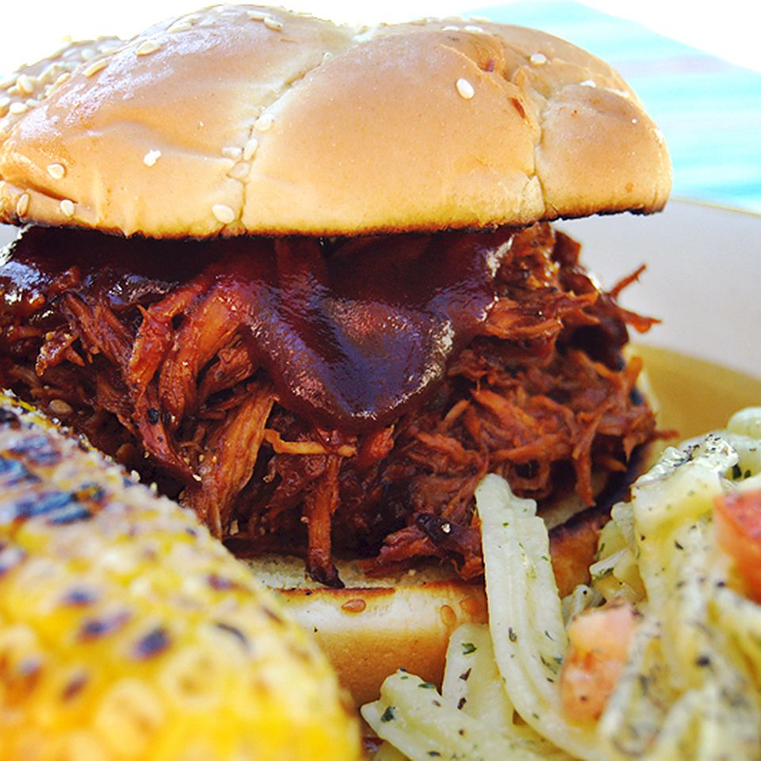

Texas Pulled Pork

Description
This pulled pork recipe is tender, juicy, and oh-so flavorful —
and it's incredibly easy to make in your slow cooker!
Ingredients
- Vegetable oil
- Pork
- Barbecue sauce
- Yellow mustard
- Worcestershire sauce
- Apple cider vinegar
- Chicken broth
- Brown sugar
- Chili powder
- Garlic
- Dried thyme
- Onion
- Hamburger buns
Steps
- Pour oil into the slow cooker, then place the roast on top of the oil.
- Add the remainig ingredients to the Crock-Pot
- Cover and cook until the pork shreds easily
- Shred the pork and return it to the slow cooker to combine it with the juices
- If you're making sandwiches, serve the pulled pork on buttered buns